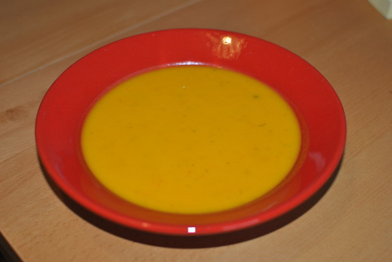

Kürbissuppe mit Dill

- Zubereitung: ca. 25 Minuten
- Für 4 Personen
Zutaten
- 700 g Hokkaido-Kürbis
- 1 große Zwiebel
- 2 EL Sonnenblumenöl
- 1 l Gemüsebrühe
- 1 Bund Dill
- Salz
- Pfeffer
- 2 EL saure Sahne
Zubereitung
- Den Kürbis waschen, putzen und grob würfeln. Die Zwiebel schälen
und klein schneiden. Die Zwiebel- und Kürbisstücke in einem Topf mit
Öl glasig braten. Die Brühe zugießen, alles aufkochen und 10 Minuten
köcheln lassen.
- Den Dill waschen, trocken schütteln und klein schneiden. Die Suppe
mit dem Pürierstab pürieren und mit Salz, Pfeffer und der sauren Sahne
abschmecken. Vor dem Servieren den Dill leicht untermischen.